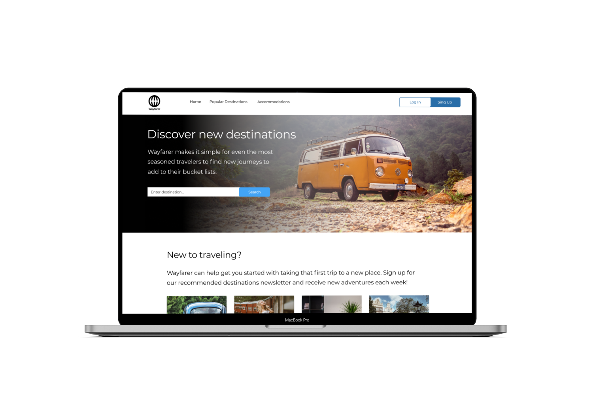

Project Background
Wayfarer, a travel website, needed a new landing page and mobile app design. Wayfarer is a place for travelers to discover new locations to visit around the world. Although it doesn’t directly sell any trips, flights, or accommodation on the site, people use it as a tool for researching where to travel next, based on their preferences.
Target audience
21 -30 years old travelers or potential travelers.
Functionality
Search for new destinations. Descriptions of the new destinations. Travel tips and advice. No direct booking or reservations.
Main features
Based on the required functionality the main idea is to highlight the destination search feature. That’s why I placed it right on top of the hero image. To organize content in a logical and easy-to-explore way I used a grid system. Multiple column layouts allow users to browse the content and find necessary information easily.
Color palette
When we think of traveling, sometimes we tend to think of nature. In my design, I tried to capture the beauty of nature with an organic color palette that could be found outdoors. The result is a simple, minimal, and easy-to-use summer-inspired color scheme.
Imaginary
Images were chosen according to the color palette. The main idea was to create a warm hipsterish vibe of soul-comforting traveling. The picture of the retro camper van for the hero image on the desktop version and on the first screen on the mobile app evokes romantic holidaying feelings.
Navigation
Clear navigation on top provides user options to explore other pages and Log in / Sign up.
Call-To-Actions
Subscribing to the newsletter is the main marketing call-to-action. In order to attract more attention to it, I used a warm color background image with a brick-like texture.
*Project accomplished during UX program in DesignLab 